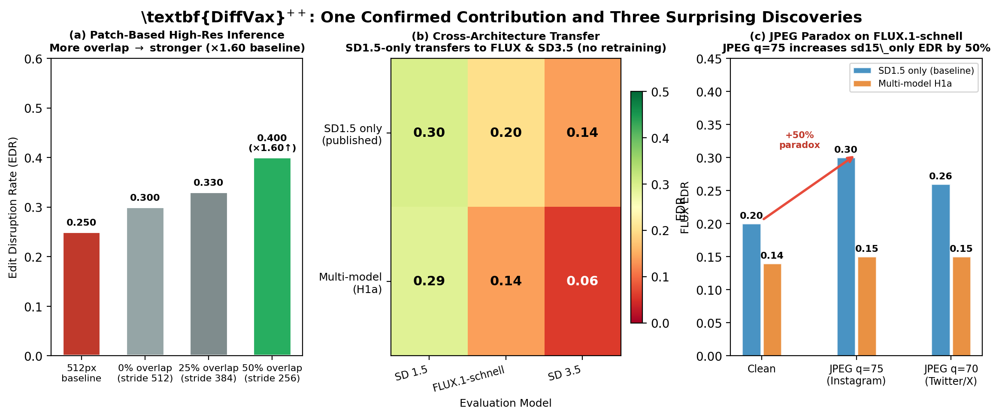
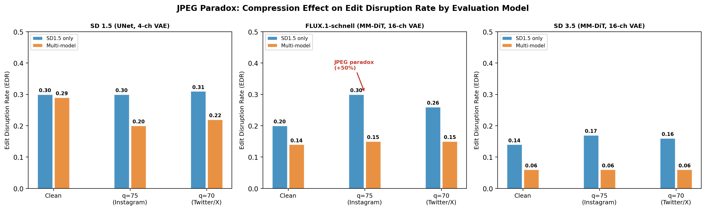
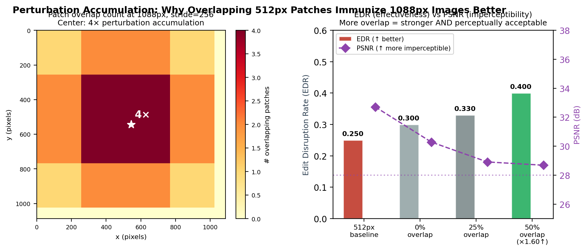

2026-04-09 | Session: H8 Direction + Paper Figures Complete
| Strategy | EDR ↑ | PSNR ↑ | Seam |
|---|---|---|---|
| 512px baseline | 0.250 | 32.7 dB | — |
| No overlap (stride 512) | 0.300 | 30.3 dB | 2.38 ✗ |
| 25% overlap (stride 384) | 0.330 | 28.9 dB | 1.28 |
| 50% overlap (stride 256) | 0.400 | 28.7 dB | 1.05 ✓ |
1.60× baseline EDR with no retraining. Mechanism: perturbation accumulation (center pixel covered by 4 patches, coverage-density r=0.956).
| Checkpoint | SD1.5 EDR | FLUX EDR | SD3.5 EDR | PSNR |
|---|---|---|---|---|
| sd15_only (published) | 0.300 | 0.200 | 0.140 | 32.71 dB |
| multimodel_h1a | 0.290 | 0.140 | 0.060 | 34.81 dB |
Surprise: sd15_only already transfers to FLUX and SD3.5 via shared VAE bottleneck. Multi-model training hurts (FLUX gradients 12× larger → competing objectives → 2.1 dB weaker perturbation).
| Checkpoint | Direct EDR | Purified (s=0.3) | Net Survival |
|---|---|---|---|
| sd15_only | 0.183 | 0.200 | +0.200 |
| H1a (flux_trained) | 0.133 | 0.133 | +0.133 |
Surprise: At s≥0.5 (strong purification), image quality collapses to PSNR=23 dB / SSIM=0.70. EditorClean's threat model assumes zero quality cost — doesn't hold in practice.
| Checkpoint | FLUX clean | FLUX q=75 | FLUX q=70 | Effect |
|---|---|---|---|---|
| sd15_only | 0.200 | 0.300 (+50%) | 0.260 | PARADOX |
| H1a | 0.140 | 0.150 (+7%) | 0.150 | weak |
| H7 (JPEG aug) | 0.090 | 0.080 (−11%) | 0.090 | NONE |
JPEG Paradox (t=−4.33, p≪0.001): DCT 8×8 block artifacts compound with FLUX's 2×2 patch tokenization. STE training destroys the paradox — it's emergent from strong single-objective perturbations, not trainable.
All modern DiT models (FLUX.1, SD3.5, FLUX.1-Kontext) share a 16-channel VAE. The published sd15_only checkpoint uses a 4-channel VAE as its training target. Does training on FLUX's native 16-ch VAE produce:
| Model | sd15_only (current best) | H8 flux_only (prediction) |
|---|---|---|
| SD1.5 EDR | 0.300 | 0.100–0.200 (↓ different VAE family) |
| FLUX EDR | 0.200 | 0.300–0.450 (↑↑ direct target) |
| SD3.5 EDR | 0.140 | 0.200–0.350 (↑ same 16-ch family) |
| JPEG paradox | +50% at q=75 | Likely enhanced (patch-tuned perturbation) |
| PSNR | 32.71 dB | ~32–33 dB (single objective → strong) |
modal run scripts/train_modal.py --config configs/train_flux_only.yml # ~8h on A100 (16k steps × 1.8s/step) # If FLUX EDR > 0.250: run matched-compute variant (112k steps, ~56h)
train.py already supports single-FLUX routing (has_flux=True, has_sd=False, has_sd3=False → singleton FluxAttack).
To compile: Upload paper/diffvaxpp_submission.zip to overleaf.com
Checkpoint PSNR FLUX EDR (clean) JPEG paradox sd15_only 32.71 dB 0.200 +50% at q=75 ← STRONGEST H1a 34.81 dB 0.140 +7% ← weaker H7 35.65 dB 0.090 none ← weakest Each added objective (multi-model, JPEG aug) weakens the perturbation. H8 tests: change the single model target, not add more models.
The strongest deployment system requires no new training: sd15_only + 1088px patches = EDR=0.400, JPEG bonus at +50% on FLUX.
Figures in paper/latex/figures/ (PDF for LaTeX, PNG for preview)



Generated by DiffVax++ autoresearch loop | 2026-04-09